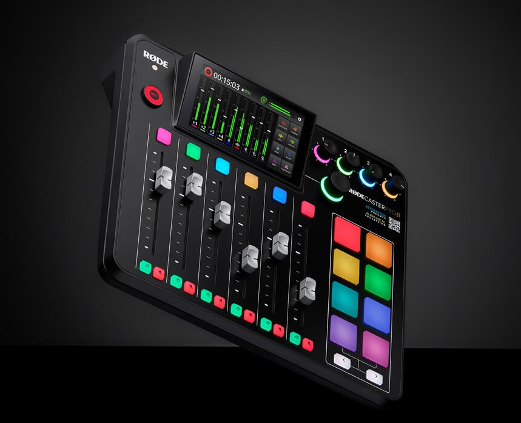

The Revolution Is Here
The RØDECaster Pro II is the world's most powerful all-in-one audio solution for streamers, podcasters, musicians, and creators. Take your content to the next level.
The RØDECaster Pro II is the world's most powerful all-in-one audio solution for streamers, podcasters, musicians, and creators. Take your content to the next level.

Experience sound like never before with the NTH-100s. Exceptional sonic performance, superior comfort and iconic looks that inspires creativity.

The NT-USB is a studio-quality USB condenser microphone that offers impeccable audio, elegant looks and premium features, all in an easy-to-use form factor, the NT-USB will have you sounding like a pro in seconds.

Give your voice that rich, broadcast sound with the PodMic. Perfect for livestreaming, voice-over, podcasting and gameplay.

The Wireless GO II is the world’s most powerful and versatile wireless microphone. With an unparalleled feature set and ultra-compact form factor, this is next generation wireless audio for every creator.

The NT-USB Mini brings pristine studio sound to a compact USB microphone, and with RØDE Connect unlocking more power, more features and more control, it’s the perfect recording solution for podcasters, gamers and streamers.